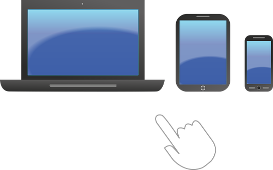

A construção da linguagem escrita é feita geralmente a partir dos três anos de idade utilizando-se o estágio de formação da inteligência e os mecanismos motores preparados para o aprendizado. Sob a perspectiva de inclusão das diversidades, considera-se também estratégias de ensino para as crianças com deficiência, transtornos globais de desenvolvimento e altas habilidades/superdotação. Os métodos pedagógicos reconhecem também que a realidade das condições sociais impede o desenvolvimento da linguagem escrita em expressivos segmentos socio-econômicos.
Disseminados de forma global entre crianças e jovens, os instrumentos móveis de comunicação tecnológica se apresentam como ferramentas úteis em algumas etapas da construção da linguagem escrita.
Os motivadores descritos nortearam a aplicação de artefatos tecnológicos de comunicação como mobiles, tablets e notebooks como ferramentas de aprendizagem com os alunos utilizando seus próprios equipamentos na sala de aula e em casa, com a construção do conhecimento sendo feita pelos alunos assistidos pelos professores e pais guiando e facilitando essa jornada.
Na metodologia adotada, segundo Jean Piaget, a construção da escrita divide-se em quatro etapas: a pré-silábica, silábica, alfabética e ortográfica. A aplicação Alfabetário foi implementada como ferramenta de apoio à construção da escrita nas fases silábica e alfabética, auxiliando o reconhecimento da relação fonema-grafema, a colocação das sílabas e a construção de um vocabulário elementar.
Na próxima etapa de desenvolvimento de uma família de ferramentas tecnológicas para linguagem, planeja-se oferecer às crianças, pais, professores e escolas novas aplicações de desenvolvimento da leitura e aperfeiçoamento da ortografia em língua portuguesa e língua inglesa.